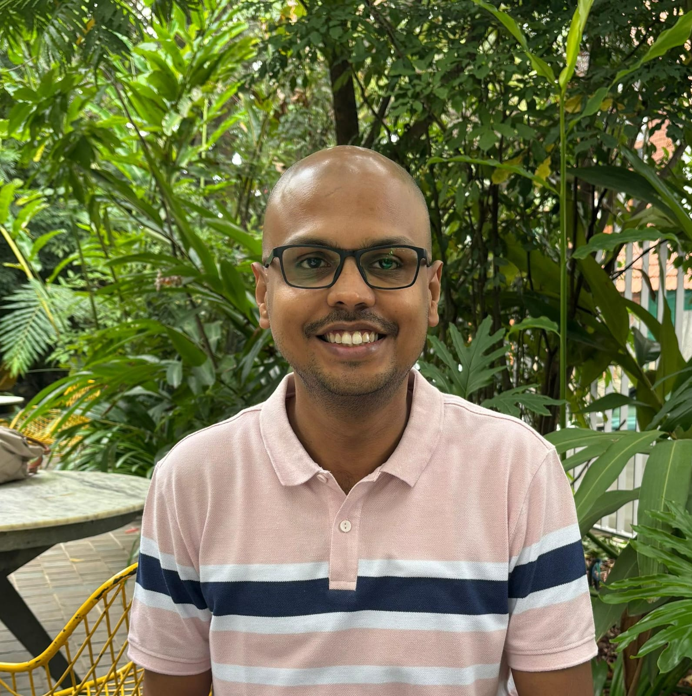
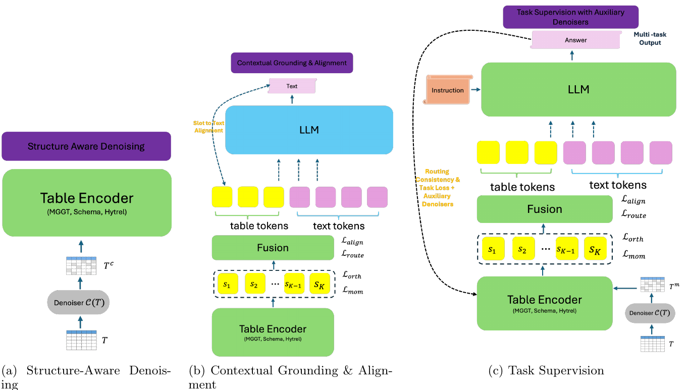
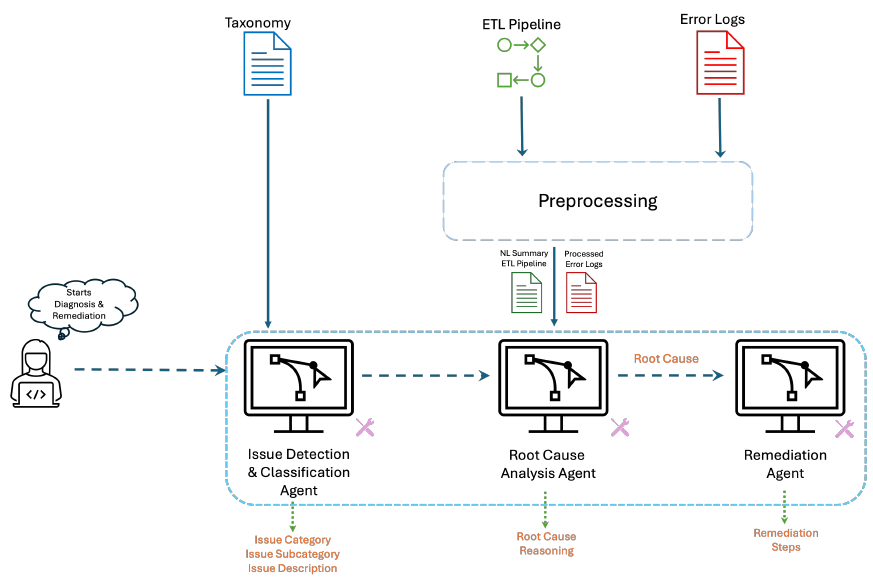

Training or evaluating enterprise agents with RL requires environments that reproduce coupled stateful services such as databases, job schedulers and APIs. Tool calls mutate underlying state and change later observations, so rollouts have to run online. Pure LLM simulators still lose track of evolving state over multi-turn episodes: write side effects disappear or invariants break, and online RL exploits any inconsistency that raises reward. Since observational equivalence only needs to hold at the tool interface, we learn that interface from execution traces and back each component with a real service, a deterministic stub or an LLM simulator depending on its state coupling and observability. The hard problem is keeping state invariants consistent across those components over long-horizon RL rollouts.

Deepak Vijaykeerthy
I work on RL post-training for language models and agents, and on stateful simulated environments and harnesses for training and evaluating them. I was a Research Assistant at Microsoft Research India from 2013 to 2015 and have been at IBM Research since 2016. My work has appeared at AISTATS, SIGMOD, CVPR, UAI, AAAI and PLDI.
Happy to chat about RL post-training, agentic environments or related work. Email is the best way to reach me: vdeepak713@outlook.com.
- AISTATS 2026From Cells to Sentences (dedicated table encoder fused with an 8B LLM)
- SIGMOD 2026Root-Cause Diagnosis for ETL Pipelines (Demo Track), deployed in IBM watsonx.data integration
- Under reviewDataBench, an execution-verified pipeline remediation benchmark (KDD 2027)
Current Research
Critic-free RLVR recipes like GRPO drop PPO's value network to save memory and simplify distributed training. Every token in a rollout then receives the same sequence-level advantage. Dropping the critic removes any running estimate of prefix value, the conditional probability that a partial trajectory will pass the verifier. You can't read that off next-token log-probabilities, since high-likelihood continuations routinely fail verification. Without a prefix-level signal, token credit stays flat across long reasoning traces and rollout compute is allocated blindly across prefixes. Policies trained this way are also poorly calibrated when their own derivation breaks down. I'm studying how to recover prefix-level value estimates inside single-model RLVR without a separate critic or changes to the rollout and training stack.
Under online RL, a fixed task distribution loses training signal as prompts saturate to zero reward variance, so the environment has to co-adapt with the policy. We study this with multi-turn search agents, where environment priors bias policy behavior as much as task difficulty does. Under partial observability, an agent that has retrieved three matching customer records can't infer from those observations whether a fourth exists, so stopping is a decision over unseen state. Policies trained with outcome rewards tend to stop too early. Our hypothesis is that they memorize the base rates of the training distribution: when missing records are rare in training, early stopping maximizes expected reward minus step cost. We're studying how to adapt training environments so stopping depends on gathered observations and search coverage even as base rates shift.
An agent's harness covers its tool schemas, observation formatting, memory and context management. Changes to the harness often move performance as much as another round of RL, yet harnesses are usually built by hand and frozen during training. Each choice encodes a prior about model failure modes: scaffolding that helps one checkpoint can bottleneck a stronger one, and baking search or verification heuristics into tools removes the gradient pressure for the policy to learn them. Our hypothesis is that scaffolding works best as a temporary curriculum aid, added between RL rounds where the policy plateaus and ablated once the policy learns it. What remains after ablation would show which deterministic compute and external state are better kept outside the weights.
Code
Post-training papers are usually grouped by objective family, though training dynamics are governed by choices below that level: gradient weighting and granularity, off-policy replay lag, within-group reward variance and proxy-reward stability. Methods in the same family can disagree on any of these. rl-experiments isolates them in small PyTorch sandboxes where you can inspect raw policy gradients directly, so failure modes that take days to appear at scale reproduce on a single GPU.
- In group-relative RL, a prompt contributes non-zero policy gradient only when its rollouts have non-zero reward variance (neither all-pass nor all-fail). Pretraining, SFT, curricula, larger group sizes and distillation each shift a different boundary of that learnable band, so they aren't interchangeable fixes for sparse reward.
- In controlled sandboxes, GRPO's entropy collapse traces upstream of PPO clipping to group standard-deviation normalization. When rollouts in a group nearly agree, dividing by the group std inflates noise into a full-scale step. Tightening the clip ratio barely slows the collapse, while removing std scaling (as in Dr. GRPO) suppresses it. Whether the same mechanism dominates at scale is the next thing to test.
- Finer-grained credit assignment (token-level or over tree rollouts) only redistributes advantage from existing reward contrast and can't create gradient where outcome reward is constant; creating signal requires reward shaping. In replay runs, policy lag (sample age) drives instability more directly than buffer size.
- Auditing multi-turn chess rollouts on a veRL FSDP worker showed that replaying recorded opponent moves after an early policy mistake leaves terminal outcome reward unchanged, even though nearly a third of solver actions (60% on the longest puzzles) occur on already-lost board states.
minilab runs a complete post-training stack (pretraining, SFT, preference optimization and RLVR) on a single laptop GPU, with eight RL objectives sharing one rollout loop so objective differences are isolated from infra changes. The study built on it treats sparse-reward RL as an information problem before an optimization problem, since policy gradient can only reinforce trajectories the policy samples with non-zero probability and the verifier separates from surrounding failures.
- On a multi-step tool-use task, online RL training reward rose while held-out reward dropped until SFT covered full trajectories with intermediate tool outputs (plus replay to prevent forgetting). Once SFT brought the task into a learnable regime, 20 steps of RL beat matched
lr=0controls across all five seeds. - Streaming the backward pass across multi-turn rollout stages cut peak VRAM from ~22 GB (OOM on an L4) to under 5 GB without changing the gradient. Across the eight RL objectives, advantage normalization choices moved response length much more than
pass@4.
Notes
- How I think about the design space of post-training RLrl-experiments
- Reward contrast and the learnability boundary in group-relative RLlearnability sandbox
- GRPO entropy collapse upstream of clippingrl-experiments
- Credit assignment over tree rollouts in recursive GRPOrlm_grpo
- When does verifier-guided RL help a small tool-using model?minilab
Selected Publications

Serializing a table into text ties a model to surface details such as header wording and row order. Renaming columns or shuffling rows doesn't change a table's meaning, yet it causes large accuracy drops. We give tables their own encoder, pretrained on 3 million tables by reconstructing deliberately corrupted ones, and fuse it end to end with an 8B decoder-only LLM, in the way vision-language models handle images. Compressing each table roughly 10× into fixed slots also makes inference about 3× faster on large tables. Under row shuffling and header anonymization the model loses under 2 points, while the same architecture fine-tuned directly on the same data loses 6 to 22 points.

In an ETL pipeline, an error often surfaces well downstream of the stage that caused it. A zero divisor upstream becomes a NULL, passes untouched through a join, and only violates a NOT NULL constraint at the final write, where the error is reported. We built a multi-agent system that reasons backwards from symptom to cause. One agent classifies the failure against a practitioner-derived taxonomy, a second traces it upstream through the flow's structure and transformation logic, and a third proposes ranked remediations for the engineer to choose from. It runs in IBM watsonx.data integration on production DataStage pipelines.
-
2026
DataBench: A Benchmark Dataset to Evaluate Agents for Data Pipeline RemediationRitwik Chaudhuri, Deepak Vijaykeerthy, Avirup Saha, Arvind Agarwal, Kushal Mukherjee, Sameep MehtaMost benchmarks for data agents ask them to build a pipeline from a clear spec, but much of production work is repair. DataBench injects a single fault into a working Airflow or PostgreSQL pipeline (or its input data), and a fix counts only if the pipeline runs again and reproduces the exact output table. Across 86 cases in nine fault categories, current LLM agents fix about 30%.Under review at KDD 2027
-
2024
Rahul Ramachandran, Tejal Kulkarni, Charchit Sharma, Deepak Vijaykeerthy, Vineeth N. BalasubramanianDMLR Workshop, ICML 2024
-
2022
Anirban Sarkar, Deepak Vijaykeerthy, Anindya Sarkar, Vineeth N. BalasubramanianCVPR 2022
-
2020
Philips George John, Deepak Vijaykeerthy, Diptikalyan SahaUAI 2020
-
2020
Sijia Liu, Parikshit Ram, Deepak Vijaykeerthy, Djallel Bouneffouf, Gregory Bramble, Horst Samulowitz, Dakuo Wang, Andrew Conn, Alexander G. GrayAAAI 2020 · Shipped in IBM Watson Studio AutoAI
-
2019
Deepak Vijaykeerthy, Anshuman Suri, Sameep Mehta, Ponnurangam KumaraguruIJCNN 2019
-
2015
Aditya V. Nori, Sherjil Ozair, Sriram K. Rajamani, Deepak VijaykeerthyPLDI 2015
Full list on Google Scholar and DBLP.
Experience
-
IBM Research · Research Engineer · 2016 to presentMy primary thread at IBM is stateful simulated environments and harnesses for agentic RL, alongside continued pretraining, SFT and RLVR post-training on models up to 30B. Earlier I built foundation models for tabular data and LLM agents for data engineering, one of which shipped in watsonx.data integration. Before that I worked on fairness verification, explainability, adversarial robustness, test generation for ML systems and AutoML (shipped in IBM Watson Studio AutoAI).
-
Microsoft Research India · Research Assistant · 2013 to 2015I worked on probabilistic program synthesis using Metropolis-Hastings with symbolic Mixture-of-Gaussians likelihoods (~1000× faster than Monte Carlo, PLDI 2015) and on causal debugging of ML classifiers (arXiv 2016).